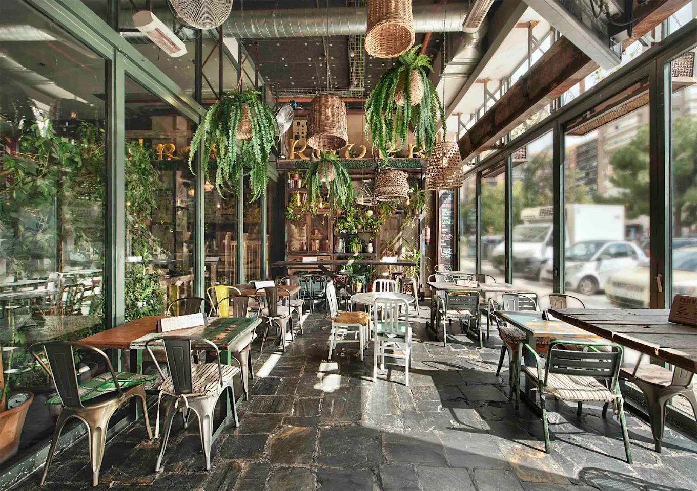

¡Nos casamos!
Almu & Dani
03 · 07 · 2027
Falta muy poco
--
días
--
horas
--
min
--
seg
 18:30
18:30
Ceremonia
Iglesia de Santa María Magdalena
Torrelaguna (Madrid)
 20:00
20:00
Recepción y celebración
Finca Casa de Oficios
Torremocha del Jarama (Madrid)
Cóctel, banquete y fiesta hasta que el cuerpo aguante.
Cómo llegar a la fincaAutobús
17:00 h
Ida desde Metro Sainz de Baranda (Doctor Esquerdo, 109)
03:00 h
05:00 h
Vuelta desde la finca, con parada en el mismo punto de recogida.

02/07Preboda
El día antes, para calentar motores en buena compañía.
The Irish Rover
Av. de Brasil 7, Madrid
02 de julio de 2027 · 20:00 – 00:00 h